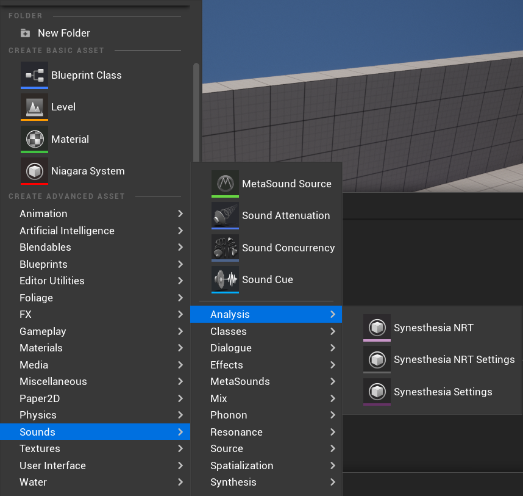
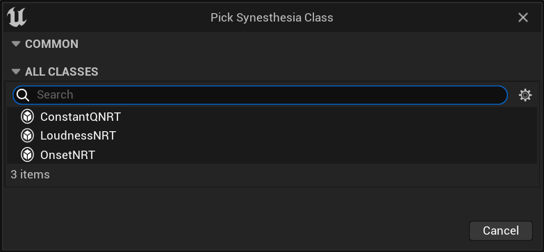
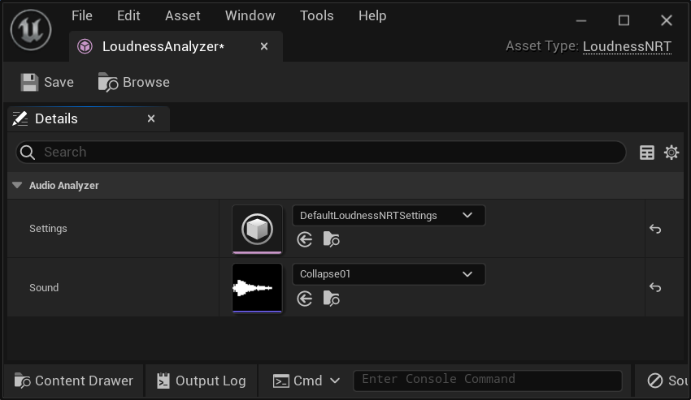
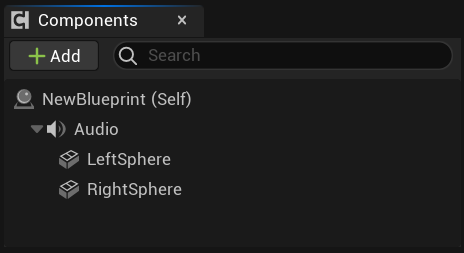
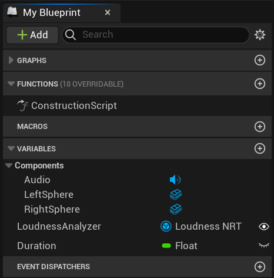
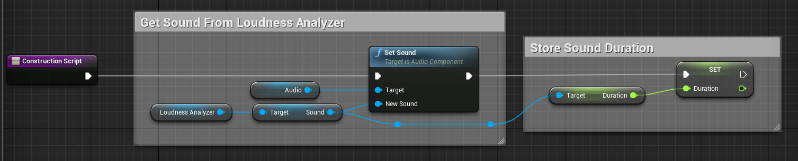
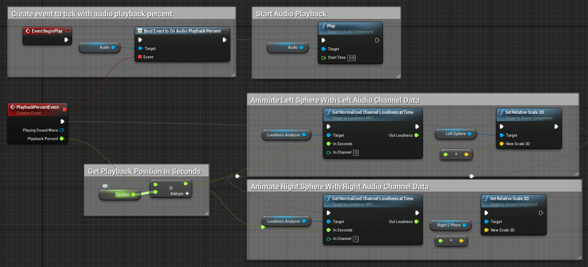

Узнайте, как использовать эту функцию бета-версию, но будьте осторожны при ее применении.
Плагин Audio Synesthesia предоставляет автоматически извлекаемые аудиометаданные для использования в игровых скриптах Blueprint. Эта функция помогает дизайнерам управлять анимацией, эффектами и другими элементами, тесно связанными со звуками.
Приступая к работе
Для использования этой функции необходимо активировать плагин Audio Synesthesia. Перейдите в Правка> Плагины> Аудио, затем установите флажок Аудио синестезия, чтобы включить. При появлении запроса перезапустите движок.
Если вы добавите новый объект Audio Synesthesia, Unreal Engine автоматически создаст для него аудиоанализатор. Вы можете добавить три типа объектов:
- NRT для аудиосинестезии: анализатор, поддерживающий анализ NRT не в реальном времени USoundWave.
- Настройки NRT для аудиосинестезии: настройки для NRT для аудиосинестезии, которые вы можете использовать для изменения настроек по сравнению со значениями по умолчанию.
- Настройки синестезии: настройки аудиосинестезии, которые вы можете использовать для изменения настроек по сравнению со значениями по умолчанию.

При создании нового ресурса появится раскрывающееся меню. Выберите тип анализа, который хотите провести.

Основные понятия
Что делает AudioSynesthesiaNRT объект:
- Связывает настройки алгоритма анализа с анализируемой звуковой волной.
- Сохраняет результаты анализа в виде uasset.
- Предоставляет доступ к результатам с помощью функции Blueprint.
Весь анализ звука с помощью AudioSynesthesiaNRT объекта выполняется в редакторе. Во время игры результаты анализа считываются из файла. Это не позволяет AudioSynesthesiaNRT объектам анализировать звук, генерируемый в игре, но избавляет от необходимости выполнять дорогостоящий анализ звука во время выполнения игры.
Анализ выполняется при каждом обновлении настроек или изменении свойства звука в анализаторе.
Пример использования анализатора
Создание и настройка анализатора LoudnessNRT
- Добавьте AudioSynesthesiaNRT ресурс. AudioSynesthesiaNRT Ресурсы находятся в разделе Аудио> Анализ> AudioSynesthesiaNRT.
- Из выпадающего меню возможных аудиосинестетических анализаторов RRT выберите LoudnessNRT.
- Необязательно: Добавьте объект AudioSynesthesiaNRTSettings из Audio > Analysis > AudioSynesthesiaNRTSettings, выбрав LoudnessNRTSettings из выпадающего списка.
- Обновите свойство LoudnessNRT Sound свойством импортированного звука.

Используйте LoudnessNRT в Blueprint
Существует множество способов использования LoudnessNRT в Blueprint. Вот пример, в котором две сферы меняют свой размер в зависимости от громкости воспроизводимого звука.
- Создайте новый шаблон актера и добавьте его в свою сцену.
- Откройте шаблон, затем добавьте аудиокомпонент и две сферы. В приведенном примере сферы называются LeftSphere и RightSphere.

- Добавьте две переменные: LoudnessAnalyzer и Duration. Длительность должна быть float, а LoudnessAnalyzer — LoudnessNRT.

- В скрипте создания:
- Установите в качестве звука аудиокомпонента звук, используемый в анализаторе громкости.
- Сохраните общую продолжительность звука.

- В сценарии события:
- Настройте событие AudioPlaybackPercent так, чтобы оно запускалось при каждом обновлении процента воспроизведения звука.
- Запустите воспроизведение звука.
- Получите время воспроизведения в секундах, умножив продолжительность звука на процент воспроизведения.
- Получите нормализованные значения громкости из анализатора на текущий момент воспроизведения в секундах.
- Установите масштаб сферы в соответствии со значением громкости.

Анализаторы, не работающие в режиме реального времени (NRT)
ГромкостьNRT
Анализатор LoudnessNRT измеряет субъективную громкость звука. Он похож на огибающий анализатор или даже на децибелметр тем, что связан с амплитудой звука и выдает числовое значение, которое меняется с течением времени. Он отличается от простого измерения амплитуды тем, что учитывает особенности восприятия звука человеком и его более или менее чувствительность к определенным частотам. Например, свисток может иметь довольно низкую амплитуду, но при этом восприниматься как относительно громкий звук. Сравните это с самыми низкими басовыми нотами, которые могут иметь очень высокую амплитуду, но при этом восприниматься многими слушателями как умеренно громкие. LoudnessNRT учитывает все эти факторы и считает свист громким, а басовую ноту — умеренно громкой.
LoudnessNRTSettings используется для настройки анализатора LoudnessNRT. Чаще всего в LoudnessNRTSettings настраиваются следующие параметры:
- AnalysisPeriod определяет периодичность измерений.
- MinimumFrequency и MaximumFrequency определяют интересующие вас частоты. Это полезно, если вы хотите полностью игнорировать контент в верхнем или нижнем регистрах или если вам нужно сравнить громкость в разных частотных диапазонах.
- CurveType определяет, какую именно кривую восприятия следует использовать. Как правило, это расширенная настройка.
- NoiseFloorDb обозначает, какую амплитуду следует считать нулевой.
ConstantQNRT
Анализатор ConstantQNRT измеряет интенсивность отдельных диапазонов в аудиосигнале. Он похож на спектрограмму тем, что показывает громкость в частотном диапазоне в определенный момент времени, но отличается тем, что диапазоны расположены в соответствии с их восприятием. При использовании анализатора ConstantQNRT диапазоны расположены так же, как ноты на фортепиано или полосы в многополосном эквалайзере.
ConstantQNRTSettings используется для настройки анализатора ConstantQNRT. Наиболее часто настраиваемые параметры в ConstantQNRTSettings:
- AnalysisPeriod определяет периодичность измерений.
- StartingFrequency, NumBands и NumBandsPerOctave определяют расстояние между полосами частот, их ширину, расположение и количество.
- DownMixToMono указывает, следует ли обрабатывать аудиоканалы по отдельности или микшировать их в один аудиоканал перед обработкой.
OnsetNRT
Анализатор OnsetNRT определяет моменты начала звучания, исходящие из множества источников, в том числе моменты начала нот, ударных инструментов, взрывных звуков и взрывов. Анализатор OnsetNRT предоставляет информацию о моментах начала звучания с указанием их временных меток и силы звука.
OnsetNRTSettings используется для настройки анализатора OnsetNRT. Наиболее часто настраиваемые параметры в OnsetNRTSettings:
- GranulartiyInSeconds определяет минимальный интервал между началами.
- Sensitivity устанавливает порог громкости, при котором начало будет обнаружено.
- MinimumFrequency и MaximumFrequency регулируют диапазон частот, в котором ищется начало. Это полезно, если вы хотите полностью игнорировать контент в верхнем или нижнем регистре или если вам нужно сравнить активность начала в разных частотных диапазонах. * DownMixToMono указывает, следует ли обрабатывать аудиоканалы по отдельности или микшировать их в один аудиоканал перед обработкой.